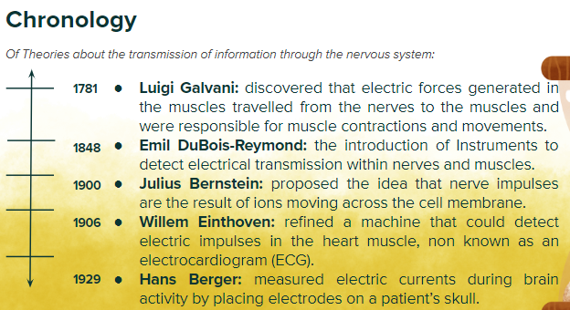

Nerve Signals

Callout
Synapses
- A synapse is a site where a neuron makes a functional connection with either another neuron or an effector, such as a muscle fiber or gland.
- On one side of the synapse is the axon terminal of a presynaptic cell, which is the neuron that transmits the signal.
- On the other side is either a dendrite or the cell body of a postsynaptic cell, which is the neuron or effector (such as a muscle cell) that receives the signal.
- Depending on the kind of neuron, communication across a synapse may occur either chemically or electrically.

Chemical Synapses

Callout
- Chemical synapses are synapses in which a neurotransmitter moves from a presynaptic cell to a postsynaptic cell through the synaptic cleft.
- In chemical synapses, a chemical messenger called a neurotransmitter is released by an axon terminal at the synapse.
- The plasma membranes of the presynaptic and postsynaptic cells are separated by a narrow gap, about 25 nm wide, called the synaptic cleft where neurotransmitter diffuses.
Electrical Synapses
Electrical synapses are synapses in which the presynaptic cell makes direct contact with the postsynaptic cell, allowing current to flow via gap junctions between the cells.
- In an electrical synapse, the plasma membranes of the presynaptic and postsynaptic cells are in direct contact, allowing the current to flow directly from one neuron to the next.
- When an electric impulse arrives at the axon terminal, a gap junction allows ions to flow directly between the two cells, providing unbroken transmission of the electrical signal.
- Electrical synapses allow for very rapid transmission and synchronous activity in a group of neurons.

Resting Membrane Potential
A special ion channel, the Na+/K+ active transport pump, uses energy from ATP hydrolysis to pump three Na+ out of the cell for every two K+ pumped in.
- This generates a higher Na+ concentration outside the cell and a higher K+ concentration inside the cell.
- This explains the net positive charge outside the cell. The inside of the cell has an additional negative charge because the cell also contains many anions.
- The membrane of a typical neuron that is not conducting an impulse exhibits a steady negative membrane potential of about –70 mV. called the resting potential.
- The Na+/K+ pump creates the imbalance of Na+ and K+ inside and outside the cell.
- The concentration of anions within the cell results in the inside being negatively charged and the outside being positively charged.
Action Potential
When a neuron conducts an electric impulse, there is an abrupt and temporary change in membrane potential; This is called an “action potential” (AP).
- An action potential causes positive charges from outside the neuron to flow inward, making the interior side of the membrane less negative.
- Many stimuli cause some degree of depolarization of a neuron, but an AP is produced only if the stimulus is strong enough to cause the depolarization to reach the threshold. This is called the “all-or-nothing principle’’.
- Once triggered, the changes in membrane potential take place independently of the strength of the stimulus.
- Once an action potential is initiated, it travels away from the stimulation point, without further triggering events with the same magnitude. This is called ‘’propagation of the action potential’’.


Callout
In Phase 1:
- The incoming positive ions raise the membrane potential (which was polarized at rest) to a less negative value. This is called depolarization.
- If depolarization continues, when the membrane potential reaches a level called the threshold potential (about –50 to –55 mV in a typical neuron), Na+ channels open.
In Phase 2:
- Na+ channels continue to open and Na+ flows inward along its concentration gradient. The action potential then fires, causing the membrane potential to increase sharply.
- In less than 1 ms, the action potential rises so high that the inside of the plasma membrane becomes positive because of the influx of positive ions across the membrane.
In Phase 3:
- The action potential reaches its peak, momentarily reaching a value of +30 mV or more.
- The interior of the neuron is relatively positive.


Callout
In Phase 4:
- The Na+ channels close and become inactive, and the K+ channels open and allow K+ to exit.
- The outward flow of K+ along its concentration gradient causes the membrane potential to fall rapidly during the process of repolarization.
In Phase 5:
- The voltage-gated K+ channels begin to close slowly.
- The slow closure allows the membrane to undershoot its resting value briefly as it repolarizes.
In Phase 6:
- In the final phase, the membrane potential stabilizes at the resting value and is ready for a new action potential.
When the potential is below the resting value, the membrane is said to be hyperpolarized. The entire change, from the initiation of the action potential to the return to the resting potential, takes less than 5 ms in the fastest neurons.


Beginning at the peak of an action potential, the membrane enters a resting period, or “refractory period”, of a few milliseconds.
- During the refractory period, the threshold that is required for the generation of an action potential is much higher than normal.
- The refractory period lasts until the membrane has stabilized at the resting potential. It keeps impulses traveling in a one-way direction in the neurons.
- This is because once ion channels are opened to their activated state, they need time to reset to their original position before they can open again.
- Therefore, only downstream ion channels are able to open, ensuring the one-way movement of the action potential along the axon toward the axon terminals.
In jawed vertebrates, a specialized mechanism allows action potentials to hop rapidly along axons instead of burning smoothly like a fuse.
- Conduction by hopping relies on nodes of Ranvier that expose the axon membrane to extracellular fluids.
- Na+ and K+ channels, which are crowded into the nodes, allow action potentials to develop at these positions, jumping rapidly from one node to the next
- This hopping form of conduction proceeds at rates of up to 130 m/s, which is much faster than the transmission rate of about 1 m/s in an unmyelinated axon of the same diameter.
Conduction across Chemical Synapses

The most common synapses are chemical synapses where neurons communicate via chemical messages called “neurotransmitters”.
- Chemical communication requires more time than electrical communication, but chemical synapses allow neurons to receive input from hundreds to thousands of axon terminals at the same time.
- Neurotransmitters are synthesized in the cell body of a neurine and stored in synaptic vesicles in the axon terminal.
- Ca2+ ions are constantly pumped out of the cell by an active transport protein in the plasma membrane, keeping their concentration higher outside than inside.
- The neurotransmitter molecules diffuse across the cleft and bind to receptors in the membrane of the postsynaptic cell which opens gated ion channels, allowing ions to flow into the dendrite or cell body of the postsynaptic neuron.
- Most neurotransmitters work by opening or closing membrane-embedded ion channels that conduct Na+ or K+ across the postsynaptic membrane. Some regulate Cl– (chloride ions).
Neurotransmitters

Callout
Nearly 100 different substances are known or suspected to be neurotransmitters.
- Most of them are relatively small molecules that diffuse rapidly across the synaptic cleft.
- Some axon terminals release only one type of neurotransmitter, whereas others release several types.
- Some neurotransmitters have stimulatory effects, whereas others have inhibitory effects.
- Acetylcholine: in humans, it triggers muscle contraction, stimulates hormone secretion, and is involved in wakefulness, attentiveness, memory, learning, anger, aggression, and sexuality.

Callout
Acetylcholine-releasing neurons in the brain degenerate in people who develop Alzheimer’s disease, causing memory, speech, and perceptual abilities to decline.
- Curare, a plant extract that is used as an arrow poison blocks muscle contractions and produces paralysis by competing directly with acetylcholine for binding sites in the synapses that control muscle cells.
- Nicotine also binds to acetylcholine receptors, but it acts as a stimulant by turning the receptors on rather than off.
- Tetanus toxin, released by the bacterium Clostridium tetani, blocks the acetylcholine in the synapses that control muscle contractions.
The body muscles contract so forcibly that the body arches painfully and the teeth become tightly clenched, giving the condition its common name—lockjaw.
- Once the effects extend to the respiratory muscles, the victim quickly dies.
- Endorphins are a type of neurotransmitters released during:
- Pleasurable experiences (such as eating or sexual intercourse)
- Physical stress (such as childbirth or extended physical exercise).
- These neurotransmitters have the opiate-like property of reducing pain and inducing euphoria. well known to exercise enthusiasts as a pleasant by-product of their physical efforts.